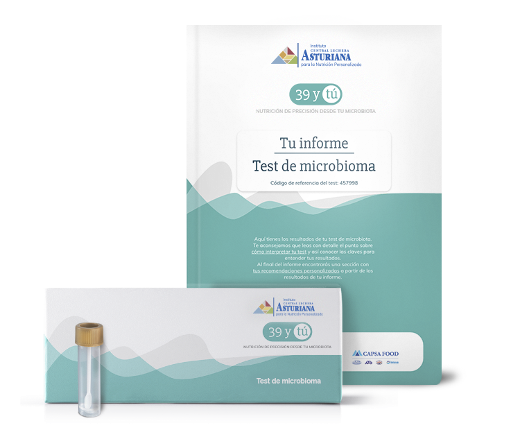
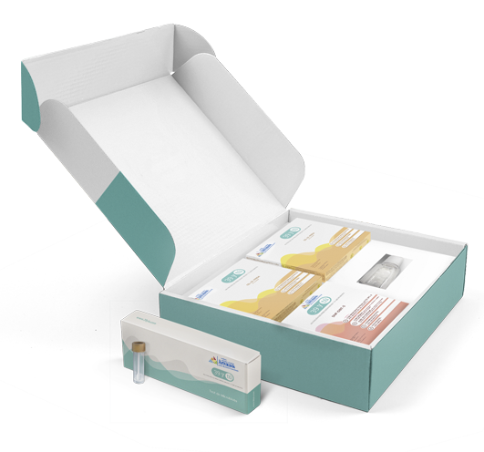

¿CÓMO CONSIGO MI PRODUCTO DE NUTRICIÓN DE PRECISIÓN?
Paso 1
Realiza tu test de microbioma
Este test analiza exhaustivamente la identidad y la abundancia de los microorganismos presentes en tu intestino para conocer la diversidad de bacterias que existen y detectar posibles alteraciones.

Paso 2
Adquiere tu producto de nutrición de precisión
Una vez realizado tu test de microbioma podremos recomendarte, en el caso que tengas alguna alteración, tu combinación personalizada de soluciones con microorganismos vivos e ingredientes bioactivos.
